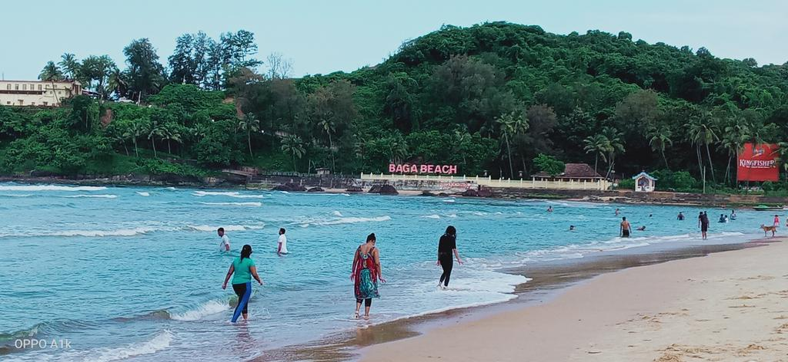
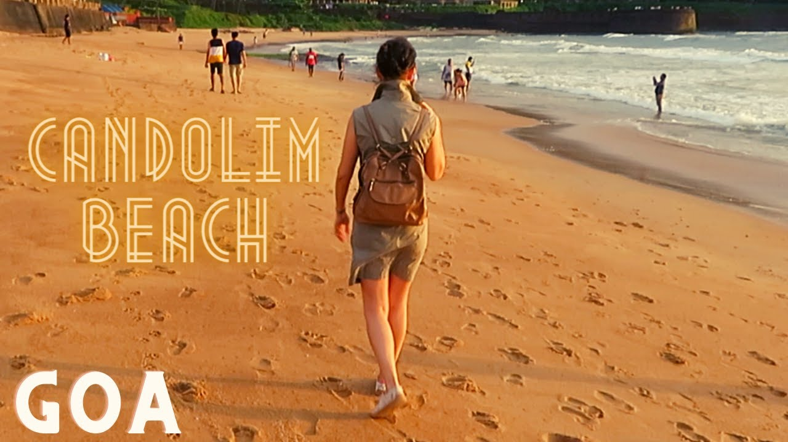
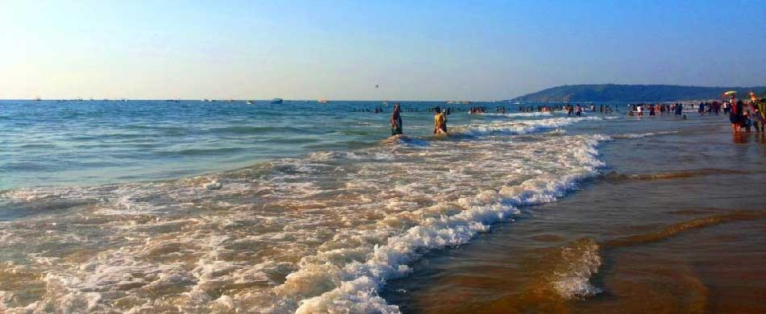
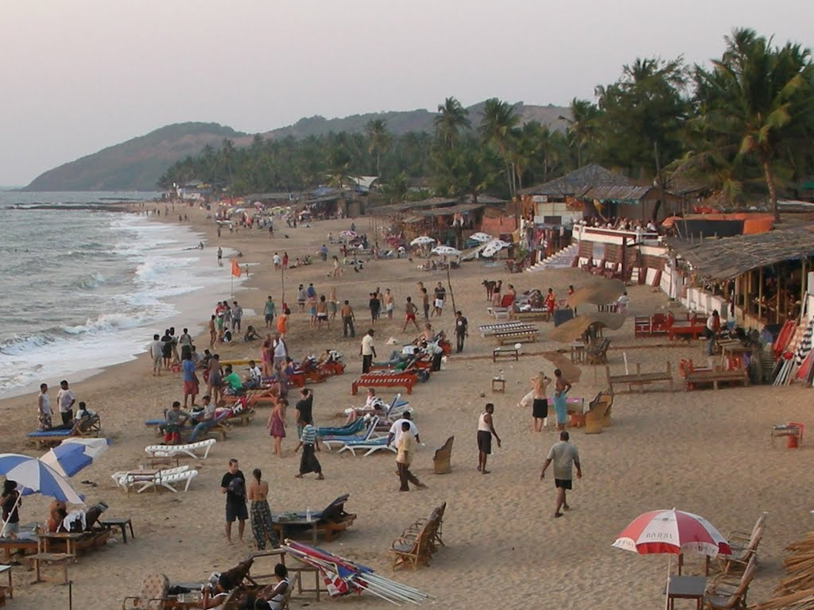
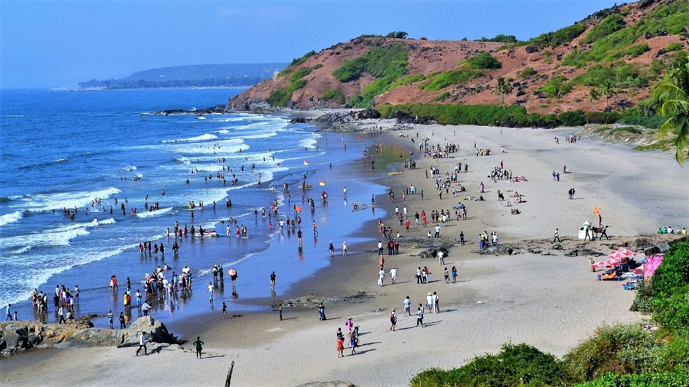
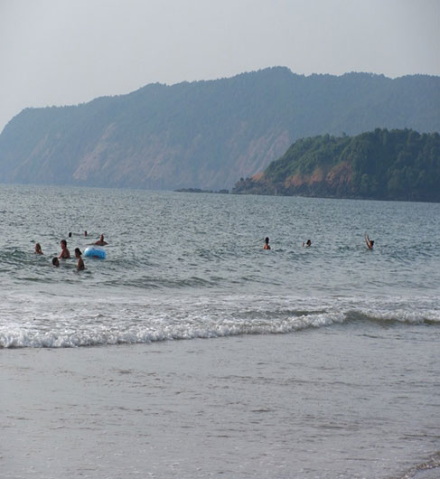

baga
Baga is a coastal town in the western Indian state of Goa. Standing on the shores of the Arabian Sea, it’s known for long, sandy Baga Beach, a popular spot for water sports. Held on Saturday nights, Baga Beach Market features stalls
selling handicrafts and textiles. Baga’s coastline extends south to lively Calangute Beach, lined with restaurants and bars, and north to palm-fringed Anjuna Beach.
Weather: 32 °C, Wind W at 19 km/h, 71% Humidity
population:
Area code: 083227
District: North Goa

candolim
Candolim is a small town in the western Indian state of Goa. Standing on the shores of the Arabian Sea, it’s known for Candolim Beach and, to the north, lively Calangute Beach. In the south, the sturdy walls of Aguada Fort, built
in the early 1600s under Portuguese colonial rule, surround a 19th-century lighthouse. The whitewashed, centuries-old Church of St. Lawrence stands on a nearby hill.
Weather: 32 °C, Wind W at 19 km/h, 71% Humidity
Population: 8,500 (2011)
Area code: 0832248
District: North Goa

calangute
Calangute is a town in the western Indian state of Goa. Standing on the shores of the Arabian Sea, it’s home to long, sandy Calangute Beach, lined with restaurants and bars. Farther north, Baga Beach is a popular spot for water
sports. To the south, the sturdy walls of Aguada Fort, built in the early 1600s under Portuguese colonial rule, surround a 19th-century lighthouse.
Weather: 32 °C, Wind W at 19 km/h, 70% Humidity
Elevation: 5 m
Population: 13,810 (2011)
Area code: 0832
District: North Goa

anjuna
Anjuna is a laid-back coastal village on the Arabian Sea in Goa, southwest India. Anjuna Beach, a sandy cove dotted with palms and black rocks, was a well-known destination among hippies in the 1960s. Today it's known for its electronic
music trance parties. Each Wednesday, a sprawling flea market sells handicrafts, jewelry and food. North of the beach is St. Anthony’s Chapel, an old church with a whitewashed facade.
Weather: 29 °C, Wind W at 14 km/h, 82% Humidity
Nearest city: Mapusa/म्हापशें
District: North Goa
Sex ratio: 0.98 ♂/♀

vagator
Vagator is a lively coastal area centered on Vagator Beach, known for its striking red cliffs. At neighboring Ozran (Little Vagator) Beach, Vagator Cliff is a popular party spot drawing hip crowds to watch the sunset from sea-view
bars and clubs. Global eateries, casual beach shacks, and trendy cafes along the coast serve experimental cuisine, while low-key backpacker haunts and upscale resorts cluster inland.
Weather: 30 °C,
Wind W at 14 km/h,
76% Humidity

agonda
Agonda is a large village located in Canacona in South Goa district, India. Agonda is famous for its beach and It is one of the only four beaches designated as turtle nesting sites under the Coastal Regulation Zone 2011 notification.
Population: 3,801 (2011)
District: South Goa district
Sub-district: Canacona


 Instagram
Instagram  Facebook
Facebook  Twitter
Twitter  Youtube
Youtube